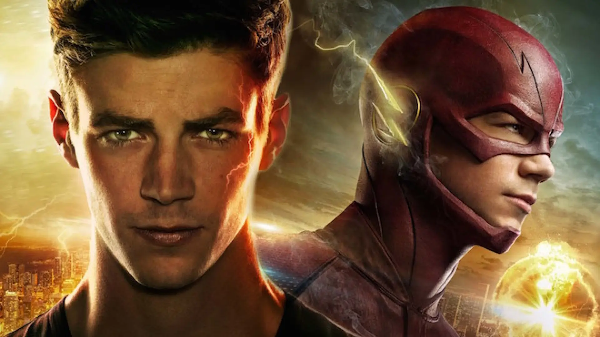

The Flash es una serie de televisión basada en el superhéroe de DC Comics del mismo nombre. La historia sigue a Barry Allen, un científico forense que, tras un accidente en el laboratorio del acelerador de partículas, adquiere la habilidad de moverse a velocidades sobrehumanas. Con su nueva capacidad, Barry decide proteger Central City de criminales y metahumanos, mientras lucha por mantener un equilibrio entre su vida personal y su papel como héroe. La serie combina acción, ciencia ficción y elementos de drama, explorando temas como la responsabilidad, la amistad y las consecuencias de alterar el tiempo.
Además, The Flash se distingue por su enfoque en los viajes en el tiempo y los universos paralelos, conocidos como el multiverso. A lo largo de sus temporadas, la serie ha presentado distintos villanos emblemáticos, alianzas con otros superhéroes del Arrowverse y tramas complejas que retan la percepción del tiempo y la realidad. Gracias a su narrativa dinámica y sus efectos visuales, la serie ha logrado capturar la atención de una audiencia amplia, convirtiéndose en un referente dentro del género de superhéroes en la televisión moderna.

La imagen presenta una representación dinámica y llena de energía del superhéroe conocido como The Flash. El personaje principal se encuentra en medio de una carrera a gran velocidad, con su cuerpo inclinado hacia adelante y una expresión decidida en el rostro. Viste su característico traje ajustado de color rojo intenso, que incluye el emblema del rayo en el pecho y detalles estilizados en la máscara. Lo que hace que la imagen sea especialmente impactante es el efecto visual de velocidad que la rodea: rayos amarillos y dorados de electricidad parecen emanar de su cuerpo, trazando estelas luminosas que enfatizan su increíble rapidez. El entorno sugiere una escena urbana en caos, con escombros, explosiones y una atmósfera difuminada que refuerza la sensación de movimiento extremo. La composición general es vibrante y cinematográfica, capturando la esencia del poder del personaje mientras atraviesa la ciudad a velocidades sobrehumanas.